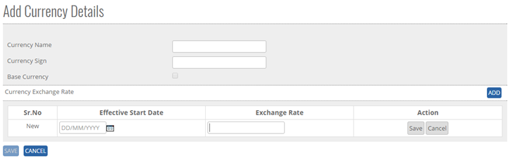

	<section>
		<article>
			<h2>Party<span></span></h2>
			<div>
				<p></p>
				

				<p>Party comes under master module. It can be accessed by user who has rights for this module.</p>

				<p>Go To >> Master >> Party >><b>ADD</b></p>

				<p>ADD New Party in master: Click on add button at top right corner of the page. Following page will open.</p>

				<div class="triangle-border top">
					
				</div>

				<p><b>To Add a "Party" in the system, system will have following fields.</b></p>

				<p>- User will enter Party Name in the Text Box. </p>

				<p>- User will enter Address in the Text Area. (Alpha Numeric is valid)</p>

				<p>- User will enter Phone No in numeric up to 100 digits. </p>

				<p>- User will enter Fax No in numeric up to 100 digits. </p>

				<p>- User will enter ST No in numeric up to 100 digits. </p>

				<p>- User will enter VAT No in numeric up to 100 digits. </p>

				<p>- User will enter TIN No in numeric up to 100 digits.</p> 

				<p>- User will enter PAN No in numeric up to 100 digits.</p> 

				<p>- User will enter CST No in numeric up to 200 digit</p> 

				<p>- User will enter CIN No in numeric up to 100 digit</p>

				<p>- User will select single/multiple checkbox for party type.</p>

				<p>- User will select Multiple Country from the List box.</p>

				<p>- User will select Multiple Theatrical Territory from the List box.</p>

				<p><b>Click on Add Party Contacts to add party contact details for that party.</b></p>

				<p>- User will enter Department in the Text Box.</p>

				<p>- User will enter Email ID in the Text Box. </p>

				<p>- User will enter Phone No in numeric Valid </p>

				<p>- User will enter Contact Name Enter in the Text Box.</p> 

				<p>Click on <b>ADD</b> Button, Enter Party Details. </p>

				<p>Click on <b>Save</b> Button, user will get alert message <b>"Record Saved Successfully"</b>.</p>

				<p>Click on <b>Cancel</b> Button the add operations and previous window will appear and data should not be saved.</p>


				<p><b>Modifying an Existing Party</b></p>

				<p>The user who has a right to edit can edit the existing "Party List" in the system. All the fields can be edited by user, which impacts all its references in the system.</p>

				<p>Click <b>Edit</b>, Edit Party List Column will be shown this Column will show Party Name as per added previously.</p>

				<p>Go To >> Master>>Party>>Search Party>Click Radio Button (Party Name) >> <b>EDIT</b></p>

				<p>Click <b>Update</b> to save the currently added operations, user will get alert message <b>"Party Record Updated Successfully"</b></p>

				<p>Click <b>Cancel</b> to cancel the add operations and previous window will appears and data should not save.</p>
				<p><b>De-Activate / activating existing Party</b></p>

				<p><b>DeActive</b> - Click on Deactivate Button, once the button is clicked it will ask confirmation message "Are you sure you want to Deactivate this record" with "OK and cancel" button.</p>

				<p>If user clicks on OK Button, record will get deactivated and if clicked on Cancel, record will not get deactivated.</p>

				<p><b>Active</b> - Same way once a record is deactivated, system will show Active button. If user clicks on Active button, record will get activated.</p>


				<p><b>Search /Show All Criteria</b></p>

				<p>- User can search the Party name and then click on <b>Search</b>, it will show the result as per the search criteria. User can search name by single alphabet.</p>

				<p>- If user wants to check all Party then click on <b>Show All</b> Button. It will show the list.</p>

				<p>- Click on page no, System will navigate the desired page, per page 10 records will be displayed.</p> 


				<p><b>View</b></p>

				<p>- View mode, where user can only view the record, user cannot do any changes or edit on View Mode </p>

				<p>- User can take Record on excel by clicking on <b>Export To Excel</b>.</p>
			</div>
		</article>
	</section>